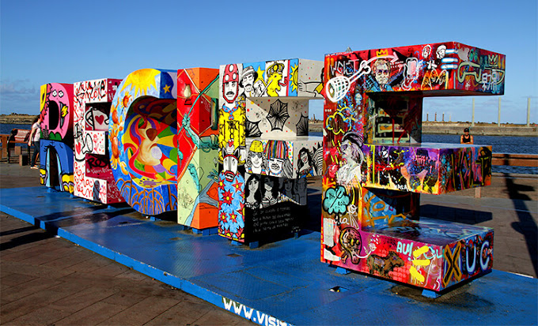
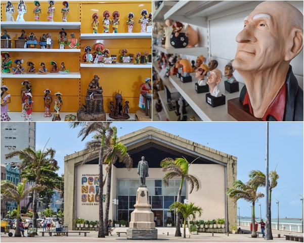

temos alguns pontos turisticos Aqui no Marco Zero Recife
Centro de Artesanato
Os antigos armazéns portuários que ficam ao lado do Marco Zero foram transformados em espaços voltados para o turismo. Um deles é o Centro de Artesanato de Pernambuco.
Rio Capibaribe

Recife é chamada por alguns de a “Veneza brasileira”, por conta dos canais que cortam a cidade. A navegação é oferecida por algumas empresas privadas. Existem algumas opções que saem do próprio Marco Zero que lhe leva direto para o Parque das Esculturas Francisco Brennand, que fica do outro lado do rio. Mas, esse parque é uma área mais “abandonada”, falo mais sobre isso no próximo tópico.

Parque das Esculturas Francisco Brennand

O Parque de Esculturas é composto por obras do artista plástico Francisco Brennand, e foi inaugurado como comemoração dos 500 anos de descobrimento do Brasil. Foi instalado sobre o molhe do porto. Tartarugas, pelicanos, ovos, maçarico, pássaros roca e sentinela guardam a principal obra do parque, a torre de cristal, inspirada em uma flor descoberta pelo paisagista Roberto Burle Marx. A travessia do Marco Zero até o parque funciona diariamente, das 7h às 17h.
Museu Cais do Sertão

Moderno e interativo, o Museu Cais do Sertão coloca lado a lado a vida simples do povo sertanejo com a tecnologia. O resultado é um primor! Toda a riqueza do Sertão Nordestino é revelada por meio de peças, fotografias, textos e música. Vale muito a pena visitar esse ponto turístico do Recife e ver, ouvir e se emocionar com a sensibilidade do espaço. Na minha opinião, se você só tiver tempo para visitar um desses pontos turísticos do Recife, além das praias, o lugar é esse (embora ele fique a poucos metros do Marco, Zero e do Centro de Artesanato). Então, dá para fazer tudo mesmo!
Paço do Frevo

Outro museu dedicado às tradições nordestinas é o Museu Paço do Frevo. Ele fica no Recife Antigo, a poucos metros do Marco Zero, na Praça da Torre Malakoff. O frevo, que vem do verbo “ferver” é considerado um Patrimônio Imaterial da Humanidade pela Unesco, e um grande ritmo pernambucano.
Faixada Do Museu

A Rua Bom Jesus representa bem a época em que Recife virou a casa dos holandeses, durante sua ocupação no Brasil (1630-1654). Ela é uma das ruas mais antigas da capital pernambucana e uma das mais preservadas também.
Praça Marco Zero

Outro museu dedicado às tradições nordestinas é o Museu Paço do Frevo. Ele fica no Recife Antigo, a poucos metros do Marco Zero, na Praça da Torre Malakoff. O frevo, que vem do verbo “ferver” é considerado um Patrimônio Imaterial da Humanidade pela Unesco, e um grande ritmo pernambucano.
Marco Zero

Faça do Marco Zero seu ponto de partida para explorar Recife. Com sua localização privilegiada, é possível caminhar ao longo da orla e conhecer os principais pontos de interesse da cidade. O Marco Zero é construído em estilo neoclássico, com uma estátua equestre no topo.